Blog 1 : RedTape : where Style Meets Confort!
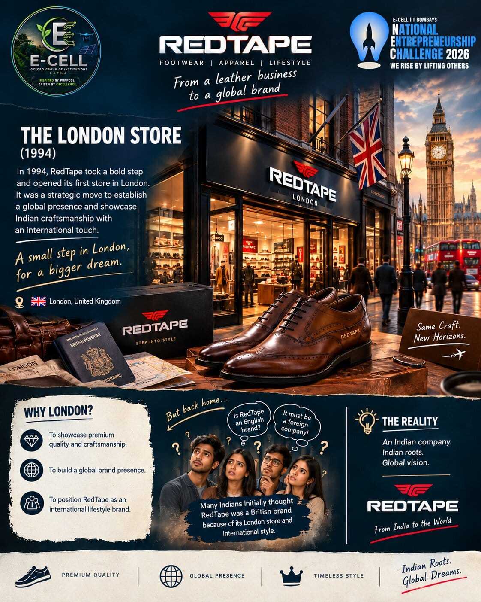

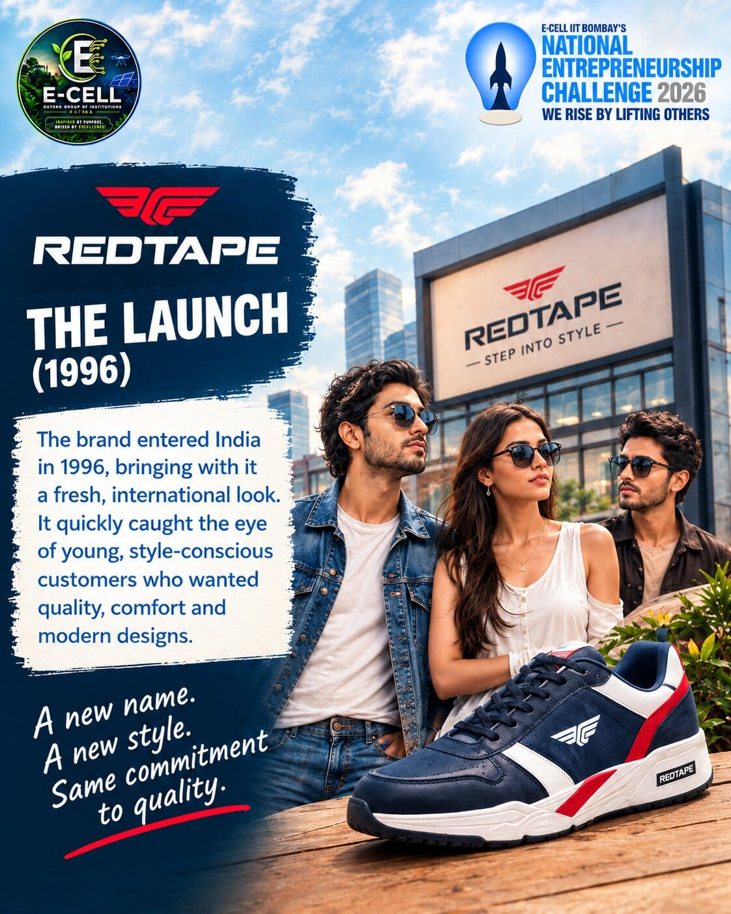
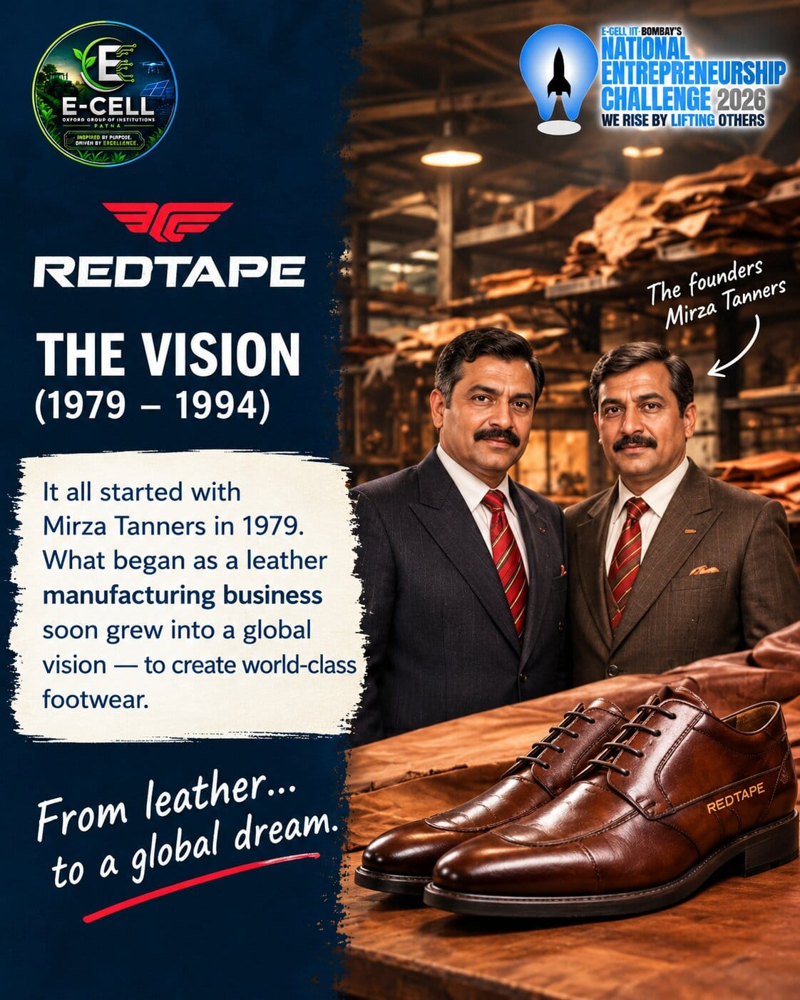
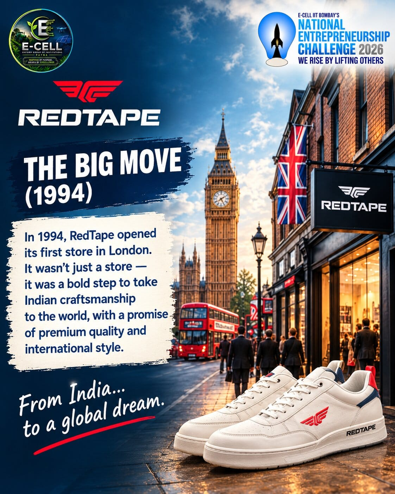

Date : 05/Aug/2026
- Heading: The Vision. Key Points: Roots: Founded in 1979 under Mirza Tanners. Goal: Started as a local leather business with a global dream to craft world-class footwear.
-
Heading: The Big Move.
Key Points: London Flagship: In 1994, RedTape made a bold move and opened its first store in London UK. Strategic Intent: A deliberate step to showcase fine Indian craftsmanship with an international flair. - Heading: Global Positioning & The Reality Key Points:Why London? To prove international quality establish a global footprint, and build a premium lifestyle image. Perception vs. Reality Due to its London location and European aesthetic, many consumers assumed RedTape was a British brand, though it remains 100% Indian at heart
- Heading: The Launch (1996) Key Points Domestic Entry RedTape launched in India in 1996, introducing an international design language Audience Fit Quickly captured young, fashion-conscious customers seeking a mix of modern styling, comfort, and premium build.
- Heading: The Expansion (2000s Onwards) Key Points Product Diversification Expanded beyond formal shoes into casual sneakers, apparel (t-shirts), and accessories (wallets, belts, caps). Lifestyle Transformation: Evolved into a complete fashion and lifestyle brand catering to diverse everyday needs.
Blog 02 : Sandeep Singh and Nikki Arora Singh


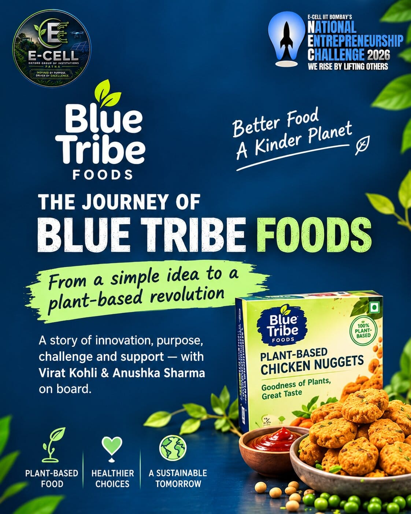
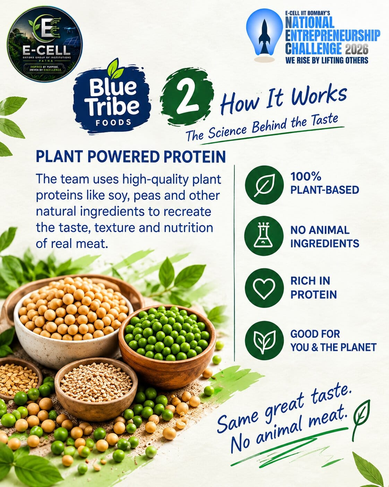
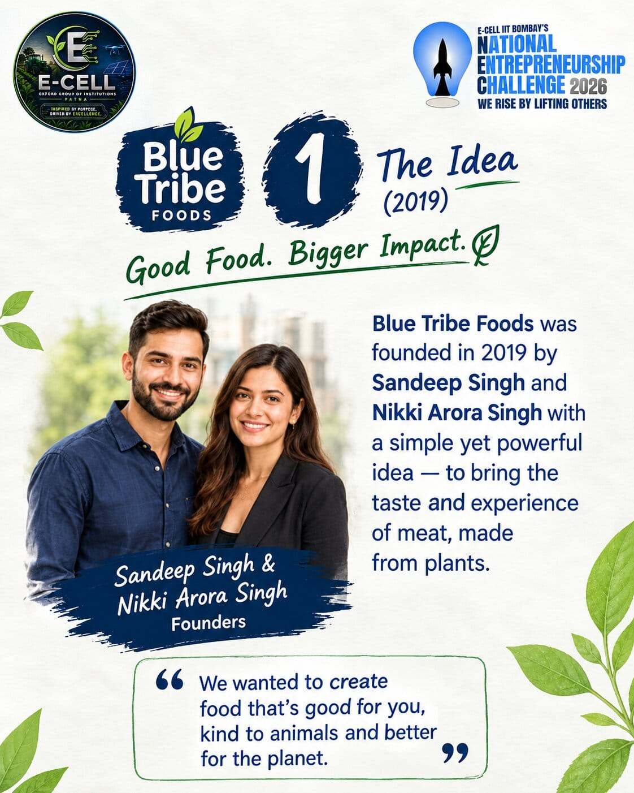
Date : 13/Aug/2026
- Slide 1 (Cover): THE JOURNEY OF BLUE TRIBE FOODS. A tagline From a simple idea to a plant-based revolution. Show a box of Plant-Based Chicken Nuggets with a bowl of nuggets and ketchup. Include logos for E-Cell Oxford Group of Institutions and E-Cell IIT Bombay's National Entrepreneurship Challenge 2026.
- Slide 2 (The Idea) Title 1 The Idea (2019). founders Sandeep Singh and Nikki Arora Singh. They founded it to bring the taste of meat from plants. Include a quote: We wanted to create food that’s good for you, kind to animals and better for the planet.
- Slide 3 (How It Works) How It Works. Show bowls of soy, peas, and grains. Icons for 100% Plant-Based, No Animal Ingredients, Rich in Protein, Good for You & The Planet. Tagline: "Same great taste. No animal meat.
- Slide 4 (Products) A grid of 6 food photos: Nuggets, Mince/Keema, Sausages, Momos, Kebabs, Soya Chaap. Tagline: Tasty. Nutritious. 100% Plant-Based.
- Slide 5 (Celebrity Investment): Celebrity Investment (February 2022). Virat Kohli and Anushka Sharma.They joined as investors and brand ambassadors. Note: Investment amount not publicly disclosed. Include a logo for Blue Tribe Foods.
- Slide 6 (Challenges & Growth): Challenges & Response for challenges (skepticism, price, distribution) and green checkmarks for solutions (R&D, education, wider range). Right side "6 Growth & The Road Ahead" with a target icon and text: "To become a ₹200 crore company within 5 years. Bottom banner: Plant-Based Food | Healthier People | A Kinder Planet | A Brighter Future.
Blog 03 :Kamlesh Nanasaheb Ghumare
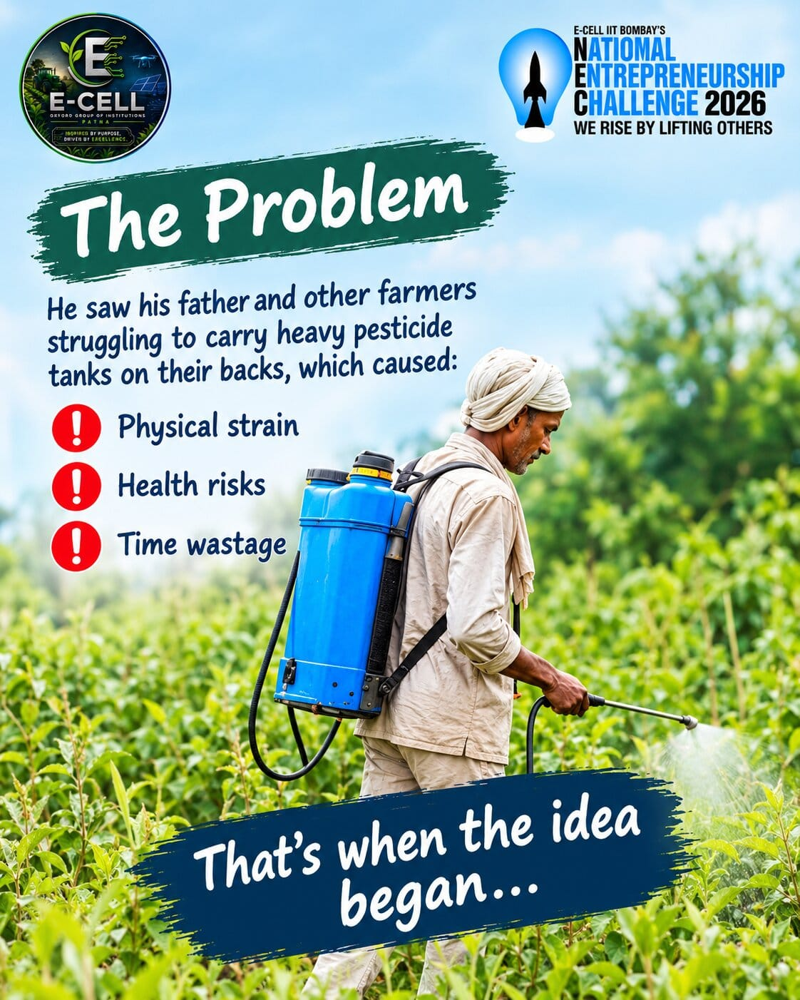

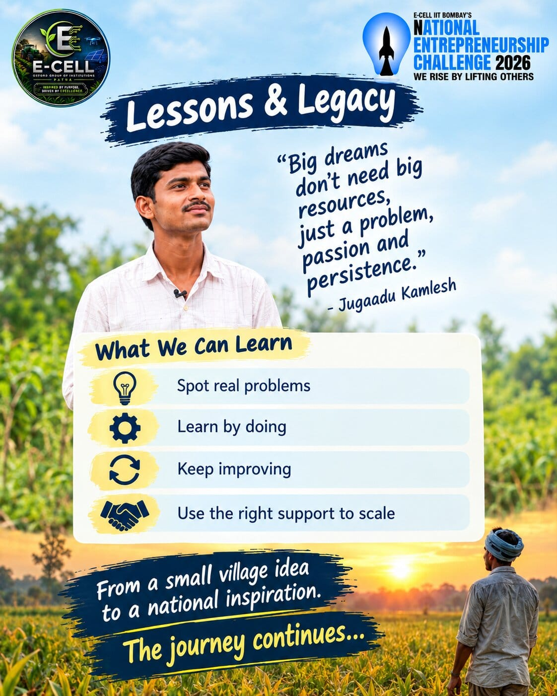

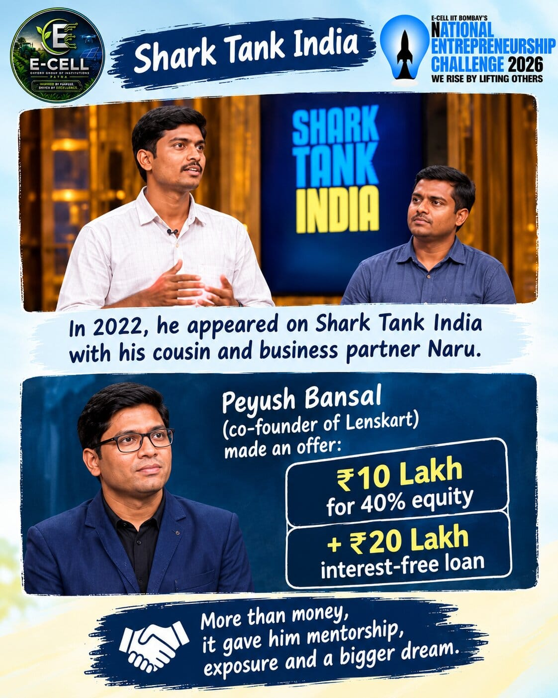

Date : 17/Aug/2026
- Slide 1: The Farmer's Son Key Points:Founder: Kamlesh Nanasaheb Ghumare (Jugaadu Kamlesh). Background: Devarpade village (Malegaon, Maharashtra) me paida hue aur pale-badhe. Education: NS Deshmukh Vidyalaya se padhai ki BCA course shuru kiya par 2nd year me kheti ki problems solve karne ke liye chhod diya. Identity: Farmer, Innovator aur Entrepreneur.
- Slide 2:The Problem Key Points:Real Observation: Kamlesh ne apne pita aur doosre kisanon ko peeth par bhaari pesticide tanks uthate hue dekha. Physical Strain: Bhaari tank uthane se kisanon ko sharir me severe dard aur thakan hoti thi. Health Risks: Chemical fumes ke directly contact me aane se health issues hote the. Time Wastage: Manual spraying me bohot ziada waqt barbaad hota tha.
- Slide 3: The Journey of Innovation Key Points First Prototype Scrap materials aur cycle components ka use karke pehla pesticide spraying cart banaya. Skill Building: Design ko improve karne ke liye 7 saal tak welding, soldering aur mechanical skills khud sikhi. Upgraded Innovation: Advanced Bharat K-2 cart banaya jo multi-purpose agricultural usage ke liye ready tha.
- Slide 4: Shark Tank India (2022) Key Points National Platform: 2022 me apne cousin aur business partner Naru ke sath Shark Tank India me pitch kiya. The Investment Deal: Peyush Bansal (Co-founder, Lenskart) ne ₹10 Lakh (40% equity ke liye) + ₹20 Lakh (interest-free loan) ka offer diya. Beyond Capital: Funding ke sath-sath strategic mentorship, national exposure aur guidance mila.
- Slide 5: KG Agrotech & Bharat K-2 Key Points Venture Focus: KG Agrotech ka maqsad kisanon ke liye affordable farming equipment banana hai. Multi-Purpose Features: Bharat K-2 cart spraying, seed sowing aur transport – teeno me kaam aata hai. Target Audience: Specially chote aur marginal farmers ki jeb ke hisab se design kiya gaya hai.
- Slide 6: Lessons & Legacy Key Points:Spot Real Problems: Hamesha ground level par asal dikkat ko pehchano. Learn by Doing: Bina bade setup ke kaam shuru karo aur karke sikho. Keep Improving: Feedback aur zarurat ke hisab se product ko lagatar upgrade karo. Right Mentorship: Sahi guidance aur support lekar business ko scale karo. Core Message: Big dreams don't need big resources, just a problem, passion and persistence." – Jugaadu Kamlesh
Blog 04: Zepto: Two Friends, One Dream, A Billion Dollar Company
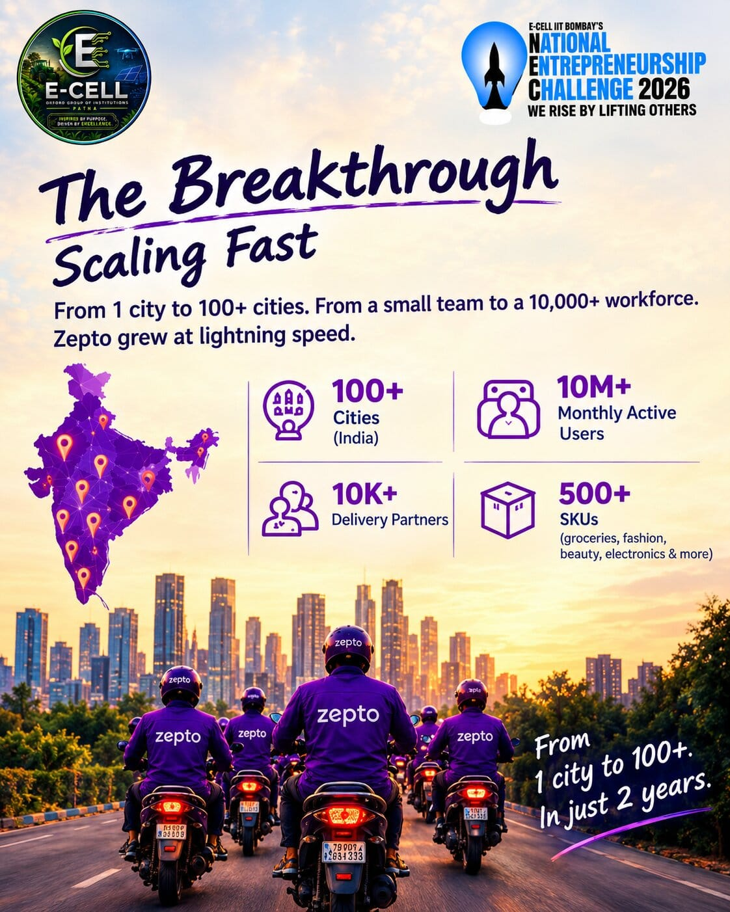
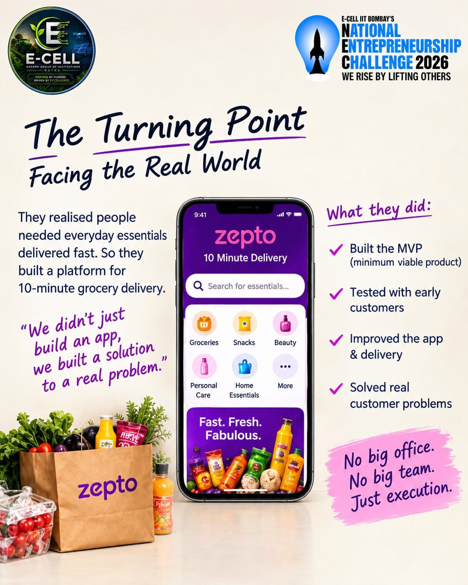


Date : 23/Aug/2026
- Slide 1: Introduction & Founders : Two Friends. One Dream. Zero Money. A Billion Dollar Company. Key Points:Founders: Kaivalya Vohra (19) aur Aadit Palicha (19) - Dono IIT Bombay dropouts. Core Idea: Company banane ke sath-sath daily lifestyle aur quick delivery ko better banana.
- Slide 2:The First Challenge - No Money Key Points Initial Struggles Shuruat me koi capital, office, team ya investors nahi the. Key Obstacles No funding, no team, no infrastructure, aur logon ke doubts/criticisms. Drive Kaivalya Vohra ka quote: We didn't have money, but we had time, energy and a crazy idea.
- Slide 3:The Turning Point - Facing the Real World Key Points Core Realization Logon ko everyday essentials ki fast delivery chahiye thi. Action Taken: 10-minute grocery delivery platform ka MVP (Minimum Viable Product) banaya aur early customers ke sath test kiya. Execution: Single app ke andar Groceries, Snacks, Beauty, Personal Care aur Home Essentials cover kiye.
- Slide 4:The Struggle - Money Crisis & Fundraising Key Points:Money Crisis: High operational costs (10 min delivery expensive thi), frequent cash burn, aur scaling ke liye capital ki jarurat. Fundraising Timeline:Seed Round (2021): $60 Million (Blume Ventures, others) Series A (2022): $200 Million (Lightspeed, Glade Brook, others) Series B (2023): $340 Million (Nexus Venture Partners, others) Series C (2024): $665 Million (Domestic + International Investors)
- Slide 5:The Breakthrough - Scaling Fast Key Points:Rapid Scale: 1 city se 100+ cities tak expansion aur 10,000+ delivery workforce. Key Growth Metrics:100+ Cities in India 10M+ Monthly Active Users 10K+ Delivery Partners 500+ SKUs (Groceries, fashion, beauty, electronics & more)
Blog 05 : DMart: Built on Vision, Discipline & Patience

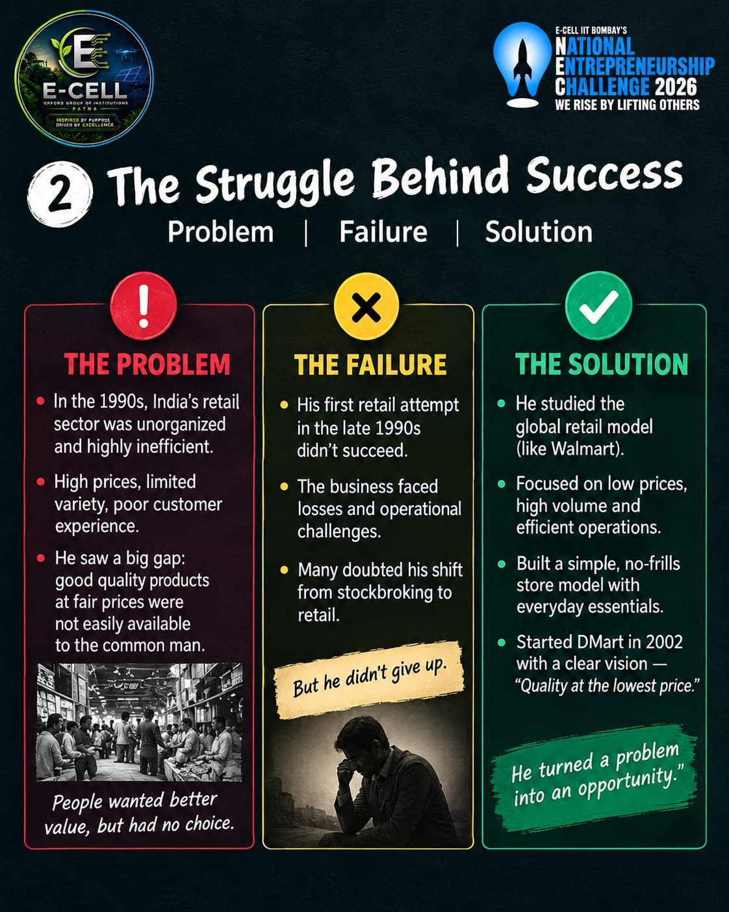

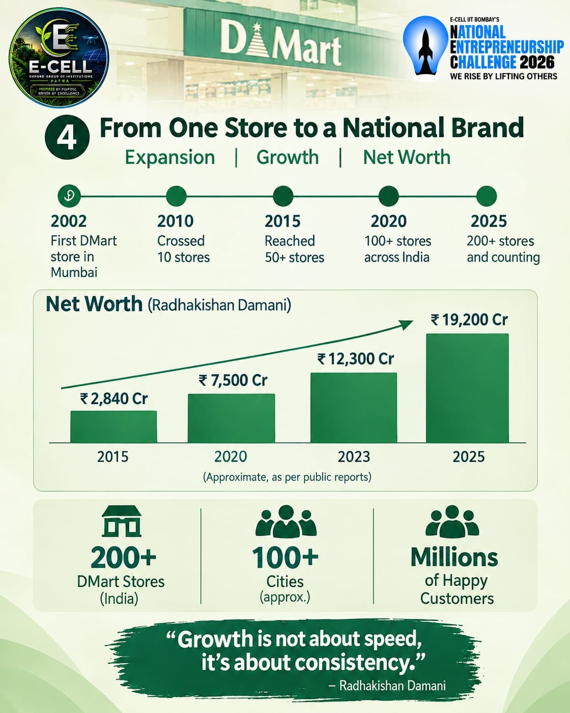
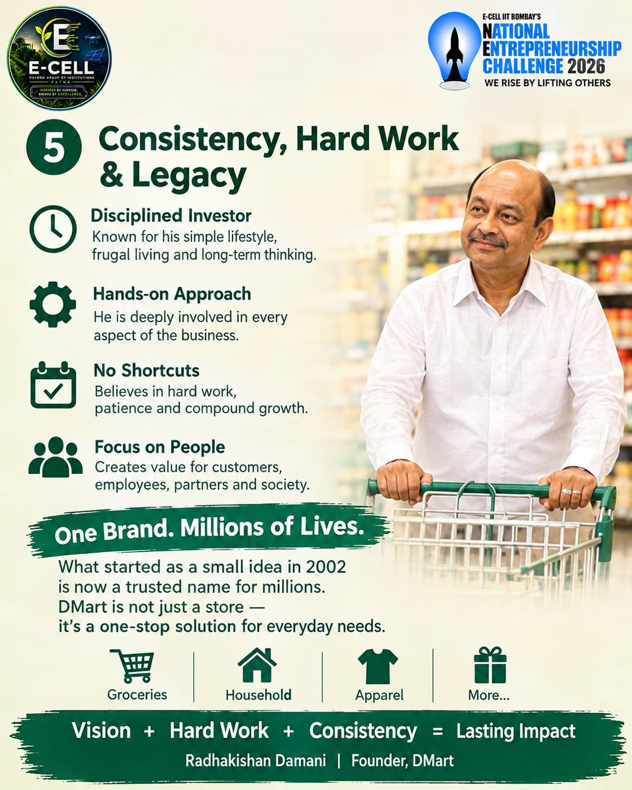
Date : 28/Aug/2026
- Slide 1: Who is the Founder of DMart? Key Content Founder Radhakishan Damani – The man behind India's most successful retail chain. Born 12 March 1954, Bhopal, Madhya Pradesh. Education: B.Com (Hons) from Sydenham College, Mumbai. Early Career: Started in stockbroking in 1980, founded Hindustan Lever Securities (later DMPL).
- Slide 2: The Struggle Behind Success (Problem | Failure | Solution) Key Content:The Problem (1990s) India's retail was unorganized and inefficient; high prices and poor experience. The Failure First retail attempt in the late 1990s failed, facing operational losses. The Solution: Studied global models (Walmart), focused on low prices and high volume, launched DMart in 2002.
- Slide 3: The Product & Customer Experience Key Content:What is DMart? A value retail chain offering groceries, household goods, and apparel at lowest prices. Why Customers Love It: Low prices, wide variety, clean/organized stores, good quality, and hassle-free shopping. Customer Feedback: "DMart has everything under one roof... prices are genuinely lower."
- Slide 4:From One Store to a National Brand (Expansion | Growth | Net Worth) Key Content:Timeline Growth:2002: First store in Mumbai. 2010: Crossed 10 stores. 2015: Reached 50+ stores. 2020: 100+ stores across India. 2025 200+ stores and counting. Key Metrics: 200+ Stores, 100+ Cities, Millions of happy customers.
- Slide 5:Consistency, Hard Work & Legacy Key Content:Core PrinciplesDisciplined Investor: Simple lifestyle, frugal living, long-term thinking. Hands-on Approach Deeply involved in business operations. No Shortcuts: Believes in compounding growth and patience. Focus on People: Value creation for customers, employees, and society. The Impact Groceries, Household, Apparel, and more under one roof.
Blog 06 : The Takeaway

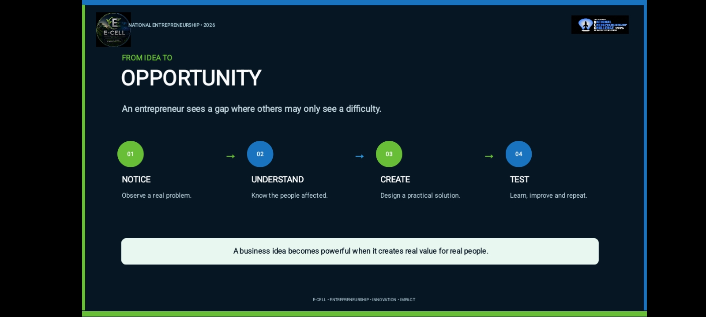
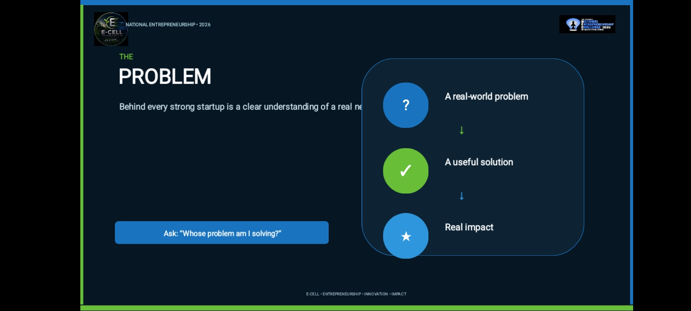
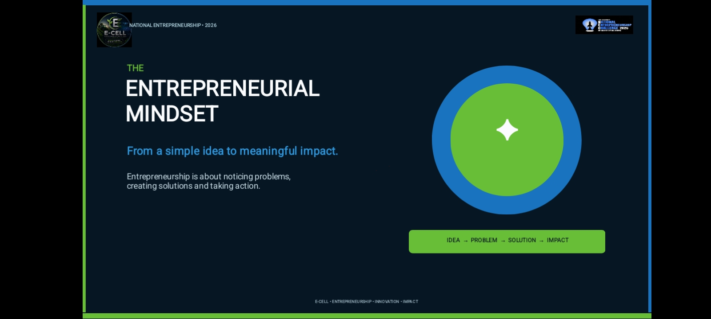

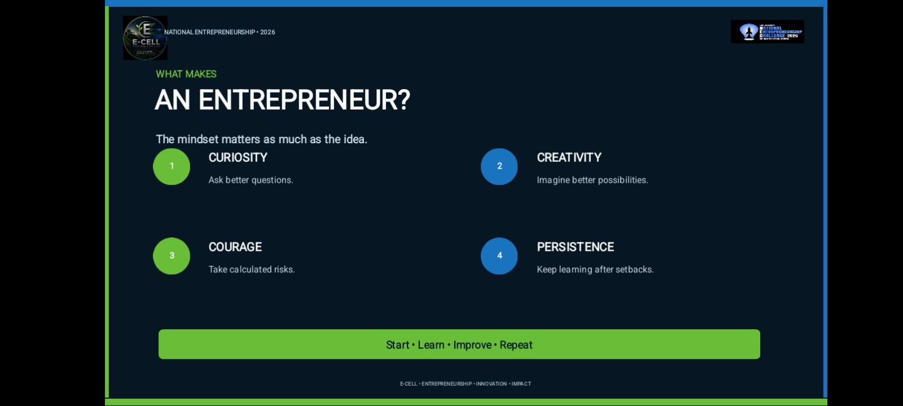
Date : 05/Sep/2026
- 1. Defining the Entrepreneurial Mindset Explain that entrepreneurship is a journey, not a single moment. Emphasize that mindset matters as much as the idea. Highlight the four core traits of an entrepreneur: Curiosity Ask better questions. Creativity Imagine better possibilities. Courage Take calculated risks. Persistence Keep learning after setbacks. Introduce the continuous cycle: Start • Learn • Improve • Repeat
- 2. Identifying the Problem and Opportunity Stress that every strong startup begins with a clear understanding of a real-world problem. Outline the process of finding opportunity: An entrepreneur sees a gap where others see difficulty. Detail the four-step process for turning an idea into an opportunity: 1. Notice Observe a real problem. 2. Understand Know the people affected. 3. Create Design a practical solution. 4. Test Learn, improve, and repeat. Include the guiding question Whose problem am I solving?
- 3. From Idea to Impact Explain that the goal is not just to launch something, but to create lasting value. Define the components of true impact: People, Change, Value, and Growth. Emphasize thinking beyond the first customer to build something people remember. Outline the progression: Idea → Action → Learning → Impact.
- 3. From Idea to Impact Explain that the goal is not just to launch something, but to create lasting value. Define the components of true impact: People, Change, Value, and Growth. Emphasize thinking beyond the first customer to build something people remember. Outline the progression: Idea → Action → Learning → Impact.
Blog 07 : The Story Of Vineeta Singh & SUGAR Cosmetics!


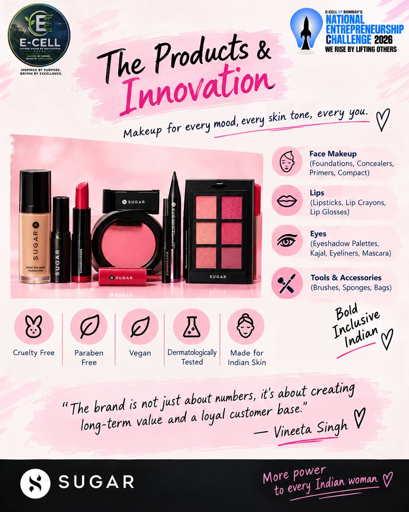


Date : 13/Sep/2026
- 1. Introduction & The Founder's Vision · Subject: Highlight Vineeta Singh, Co-founder & CEO of SUGAR Cosmetics. · The Vision: Frame her journey as a mission to build a brand that every Indian woman could feel proud of, creating 'Bold Makeup for the Modern Indian Woman.' · Founder's Background: · Education: B.Tech in Electronics & Communication from IIT Madras. · Early Career: Gained corporate experience at Bain & Company and Flipkart. · The Big Dream: Wanted to build a brand that celebrates Indian women and makes beauty accessible to all.
- 2. Company Overview & Milestones · About the Company: SUGAR Cosmetics is an Indian beauty brand founded in 2012 by Vineeta Singh and Kaushik Mukherjee. It is known for high-quality, long-lasting, and inclusive makeup products designed specifically for Indian skin tones, preferences, and lifestyles. · Key Details: Founded in 2012, headquartered in Gurugram, India, operating in the Beauty & Cosmetics industry. · Timeline of Growth: · 2012: Launched with 10 products. · 2015: Expanded product range and offline presence. · 2017: Entered online marketplaces and grew across India. · 2019: Opened first physical stores and expanded product range. · 2021+: Grew into a household name with a strong global presence.
- 3. Products, Innovation & Core Values · Product Philosophy: 'Makeup for every mood, every skin tone, every you.' · Product Categories: · Face: Foundations, Concealers, Primers, Compact. · Lips: Lipsticks, Lip Crayons, Lip Glosses. · Eyes: Eyeshadow Palettes, Kajal, Eyeliners, Mascara. · Tools & Accessories: Brushes, Sponges, Bags. · Core Values (The 'Clean' Promise): Cruelty-Free, Paraben-Free, Vegan, Dermatologically Tested, and Made for Indian Skin.
- 4. Customer Validation & Market Reception · Reviews: Highlight the strong customer feedback with an average rating of 4.5/5 from over 1,20,000+ reviews. · Key Metrics: High scores for Product Quality (92%), Packaging (90%), Shade Range (88%), Longevity (85%), and Value for Money (82%). · Testimonials: Include snippets like 'Finally a brand that understands Indian skin tones!' and 'Stays for hours and the shades are just perfect!' to demonstrate real customer love.
- 5. Financials & Profitability · Growth Trajectory: Show a steady increase in Estimated Annual Revenue (INR Cr) from 2017 through 2023. · Valuation: Current estimated valuation of ₹2,000+ Cr (2023-24). · Financial Health: Bootstrapped initially, later raised funds (Series A & B). The company is profitable with strong retail and online sales.
Blog 08 : Founder Success Story | Bhavish Aggarwal
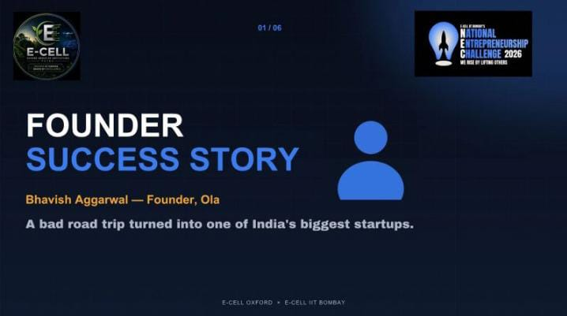
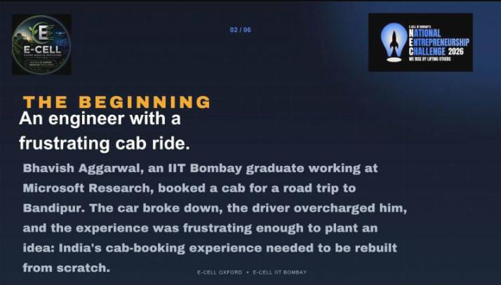
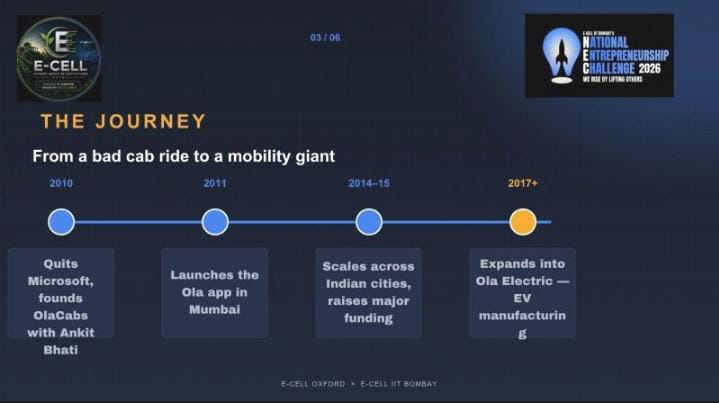
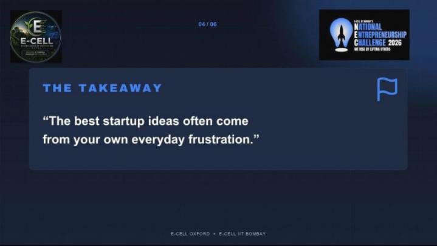
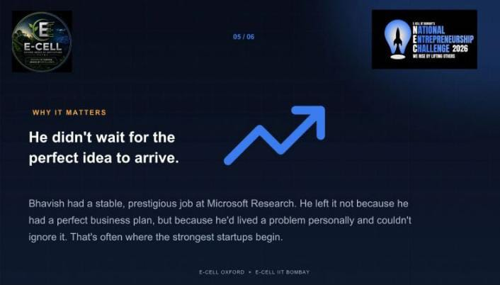
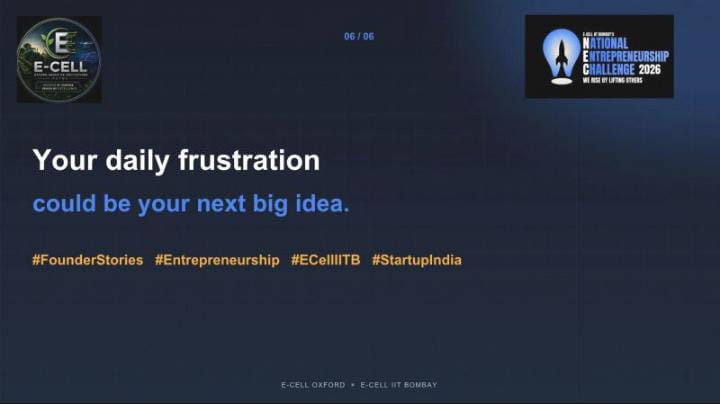
Date : 19/Sep/2026
- Slide 1 (01/06): FOUNDER SUCCESS STORY · Subject: Bhavish Aggarwal — Founder, Ola · Tagline: A bad road trip turned into one of India's biggest startups.
- Slide 2 (02/06): The Beginning · Subheading: An engineer with a frustrating cab ride. · Content: Bhavish Aggarwal, an IIT Bombay graduate working at Microsoft Research, booked a cab for a road trip to Bandipur. The car broke down, the driver overcharged him, and the experience was frustrating enough to plant an idea: India's cab-booking experience needed to be rebuilt from scratch.
- Slide 3 (03/06): The Journey · Subheading: From a bad cab ride to a mobility giant · Timeline: · 2010: Quits Microsoft, founds OlaCabs with Ankit Bhati · 2011: Launches the Ola app in Mumbai · 2014–15: Scales across Indian cities, raises major funding · 2017+: Expands into Ola Electric — EV manufacturing
- Slide 4 (04/06): The Takeaway · Quote: “The best startup ideas often come from your own everyday frustration.”
- Slide 5 (05/06): Why It Matters · Key Point: He didn't wait for the perfect idea to arrive. · Explanation: Bhavish had a stable, prestigious job at Microsoft Research. He left it not because he had a perfect business plan, but because he'd lived a problem personally and couldn't ignore it. That's often where the strongest startups begin.
- Slide 6 (06/06): Conclusion & Call to Action · Message: Your daily frustration could be your next big idea. · Hashtags: #FounderStories #Entrepreneurship #ECellIITB #StartupIndia
Blog 09 : Founder Succeess Story | Ritesh Agarwal
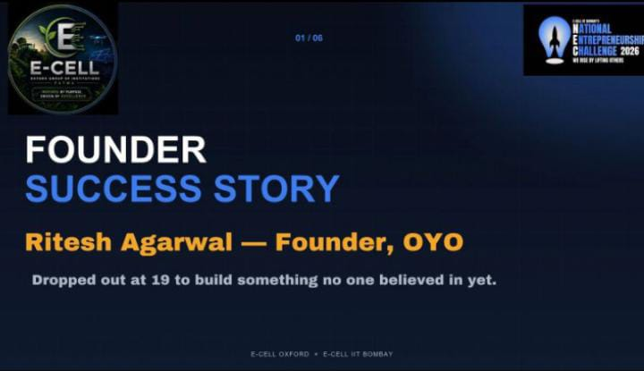
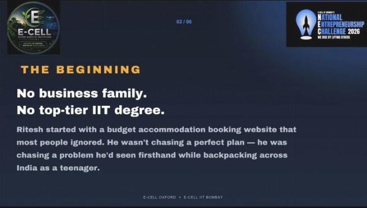
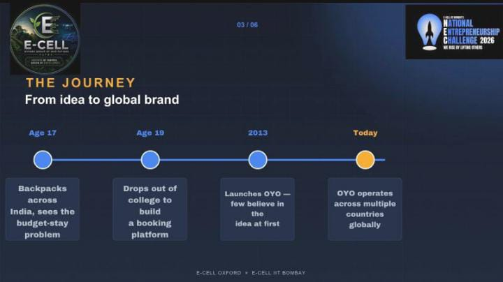
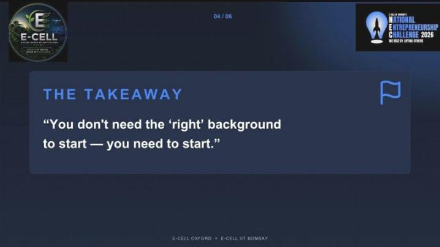
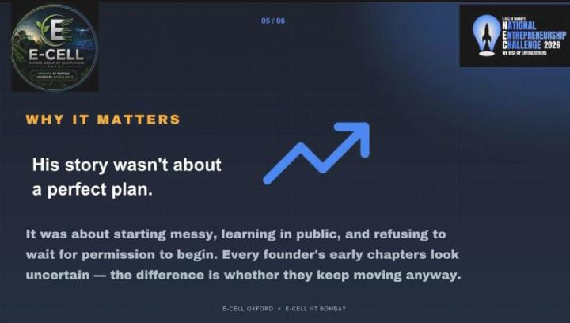
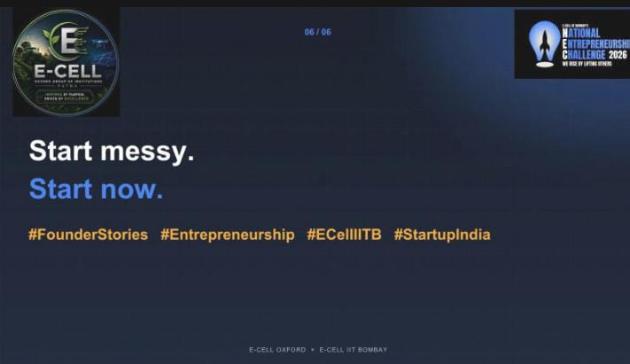
Date : 25/Sep/2026
- Slide 1 (01/06): · Heading: FOUNDER SUCCESS STORY · Subject: Ritesh Agarwal — Founder, OYO · Tagline: Dropped out at 19 to build something no one believed in yet.
- Slide 2 (02/06): The Beginning · Heading: THE BEGINNING · Subheading: No business family. No top-tier IIT degree. · Content: Ritesh started with a budget accommodation booking website that most people ignored. He wasn't chasing a perfect plan — he was chasing a problem he'd seen firsthand while backpacking across India as a teenager.
- Slide 3 (03/06): The Journey · Heading: THE JOURNEY · Subheading: From idea to global brand · Timeline: · Age 17: Backpacks across India, sees the budget-stay problem · Age 18: Drops out of college to build a booking platform · 2013: Launches OYO — few believe in the idea at first · Today: OYO operates across multiple countries globally
- Slide 4 (04/06): The Takeaway · Heading: THE TAKEAWAY · Quote: “You don't need the ‘right’ background to start — you need to start.”
- Slide 5 (05/06): Why It Matters · Heading: WHY IT MATTERS · Key Point: His story wasn't about a perfect plan. · Explanation: It was about starting messy, learning in public, and refusing to wait for permission to begin. Every founder’s early chapters look uncertain — the difference is whether they keep moving anyway.
- Slide 6 (06/06): Conclusion & Call to Action · Message: Start messy. Start now. · Hashtags: #FounderStories #Entrepreneurship #ECellIITB #StartupIndia
Blog 10 : Founder Success Story | Elon Musk
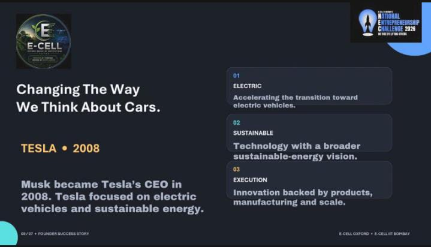
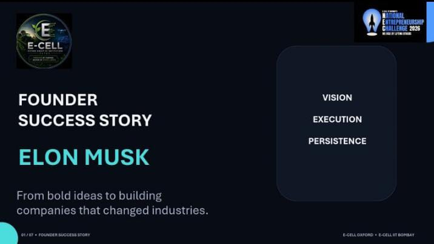
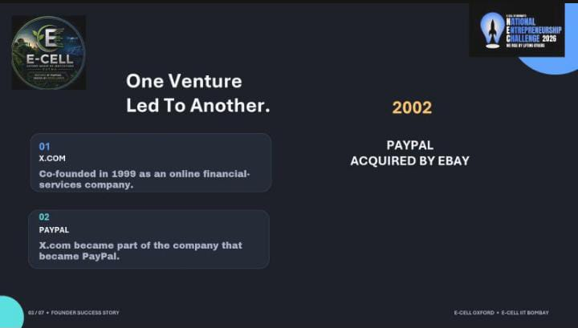
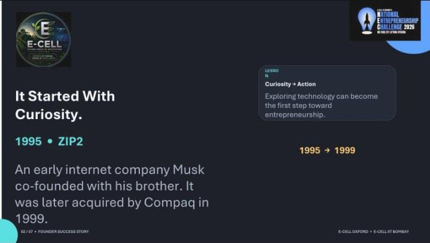
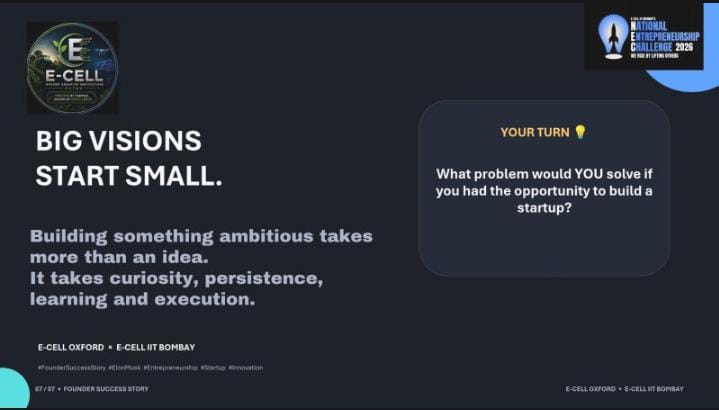
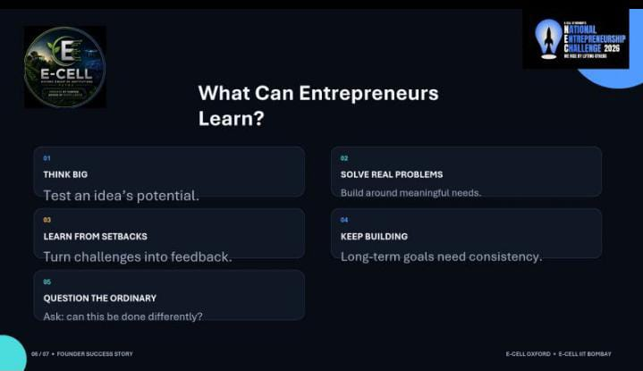
Date : 02/Oct/2026
- Slide 1 (01/06): · Heading: FOUNDER SUCCESS STORY · Subject: ELON MUSK · Tagline: From bold ideas to building companies that changed industries. · Key Themes Listed: VISION, EXECUTION, PERSISTENCE
- Slide 2 (02/06): Early Beginnings · Heading: It Started With Curiosity. · Subject: 1995 • ZIP2 · Content: An early internet company Musk co-founded with his brother. It was later acquired by Compaq in 1999. · Key Lesson: Curiosity → Action. Exploring technology can become the first step toward entrepreneurship.
- Slide 3 (03/06): One Venture Led To Another. · Timeline/Companies: · 01 X.COM: Co-founded in 1999 as an online financial-services company. · 02 PAYPAL: X.com became part of the company that became PayPal. · Milestone: 2002 - PAYPAL ACQUIRED BY EBAY
- Slide 4 (04/06): Changing the Auto Industry · Heading: Changing The Way We Think About Cars. · Subject: TESLA • 2008 · Content: Musk became Tesla’s CEO in 2008. Tesla focused on electric vehicles and sustainable energy. · Key Pillars: · 01 ELECTRIC: Accelerating the transition toward electric vehicles. · 02 SUSTAINABLE: Technology with a broader sustainable-energy vision. · 03 EXECUTION: Innovation backed by products, manufacturing and scale.
- Slide 5 (05/06): What Can Entrepreneurs Learn? · Key Lessons: · 01 THINK BIG: Test an idea’s potential. · 02 SOLVE REAL PROBLEMS: Build around meaningful needs. · 03 LEARN FROM SETBACKS: Turn challenges into feedback. · 04 KEEP BUILDING: Long-term goals need consistency. · 05 QUESTION THE ORDINARY: Ask: can this be done differently?
- Slide 6 (06/06): Conclusion · Heading: BIG VISIONS START SMALL. · Content: Building something ambitious takes more than an idea. It takes curiosity, persistence, learning and execution.
Blog 11 : The Part Of Nobody Talk About
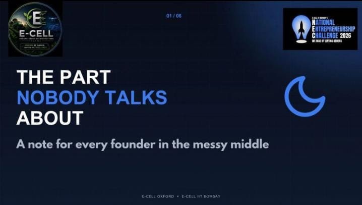
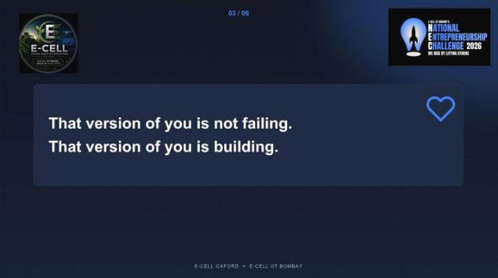
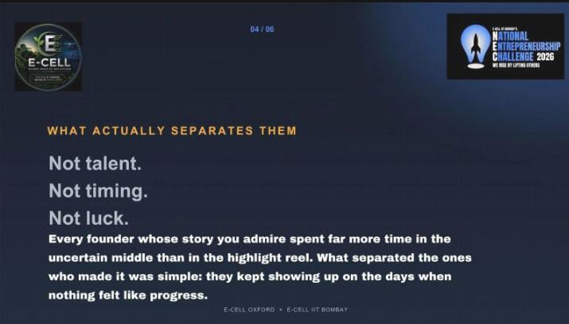
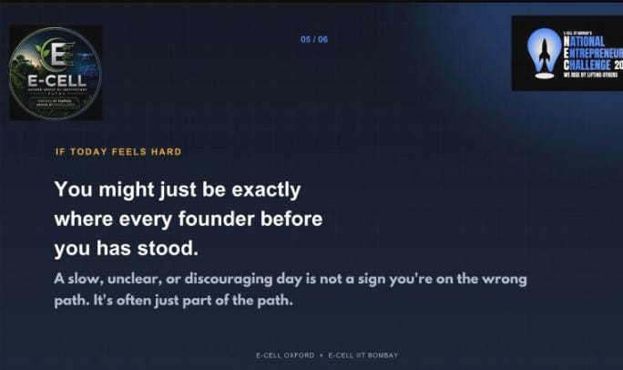
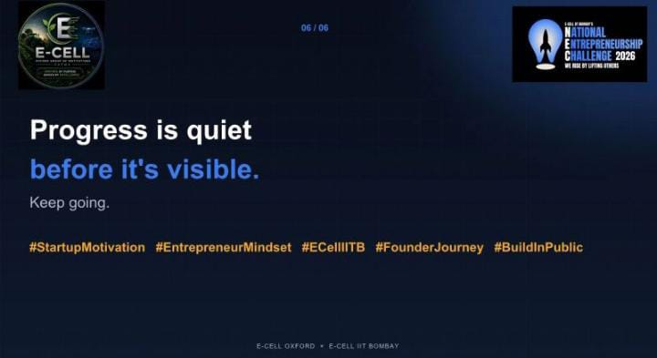
Date : 10/Oct/2026
- Slide 1 (01/06): · Heading: THE PART NOBODY TALKS ABOUT · Subheading: A note for every founder in the messy middle · Visual: A crescent moon icon.
- Slide 2 (02/06): Encouragement · Quote: That version of you is not failing. That version of you is building. · Visual: A heart icon.
- Slide 3 (03/06): The Reality of Success · Heading: WHAT ACTUALLY SEPARATES THEM · Content: · Not talent. · Not timing. · Not luck. · Explanation: Every founder whose story you admire spent far more time in the uncertain middle than in the highlight reel. What separated the ones who made it was simple: they kept showing up on the days when nothing felt like progress.
- Slide 4 (04/06): Acknowledging the Struggle · Heading: IF TODAY FEELS HARD · Quote: You might just be exactly where every founder before you has stood. · Explanation: A slow, unclear, or discouraging day is not a sign you're on the wrong path. It's often just part of the path.
- Slide 5 (05/06): Final Thoughts & Call to Action · Heading: Progress is quiet before it's visible. · Subheading: Keep going. · Hashtags: #StartupMotivation #EntrepreneurMindset #ECellIITB #FounderJourney #BuildInPublic
Blog 12 : Founder Story | Zomato
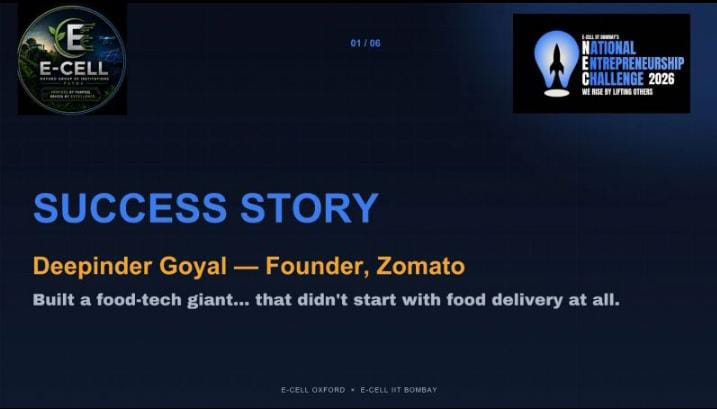
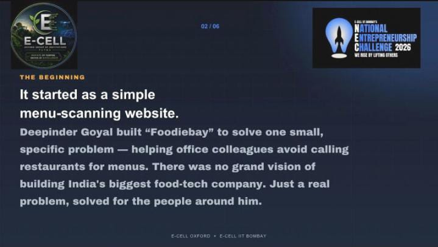
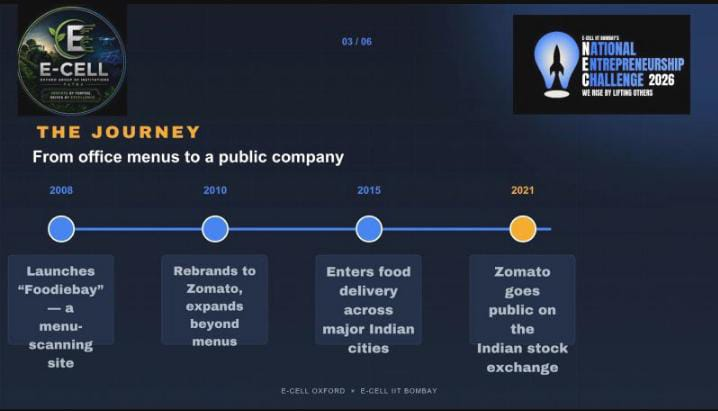
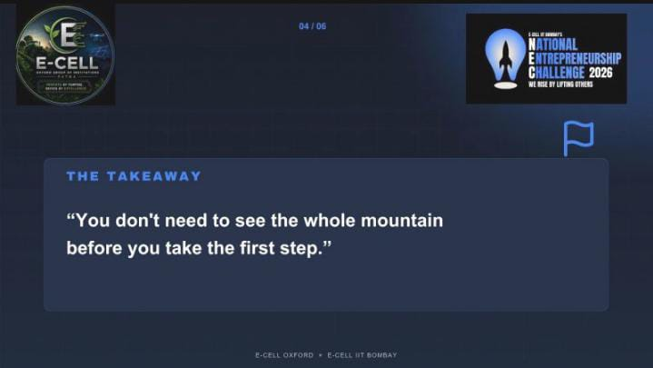
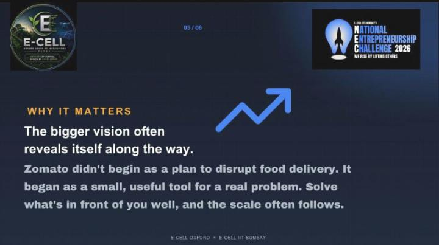
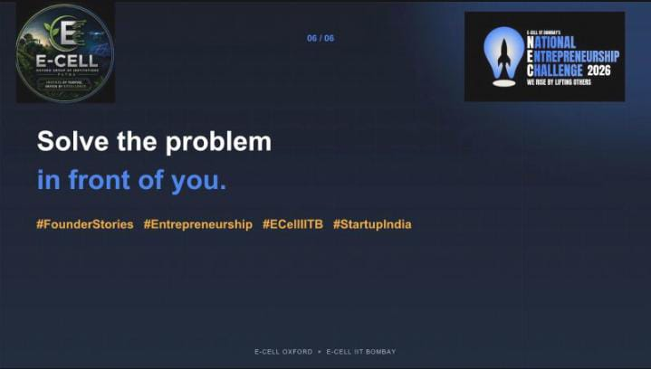
Date : 14/oct/2026
- Slide 1: Introduction — The Success Story * Topic: Deepinder Goyal, Founder of Zomato. * Core Message: He built a massive food-tech giant, but the company did not start with food delivery at all.
- Slide 2: The Beginning — Humble Origins * The Original Idea: It started as "Foodiebay," a simple menu-scanning website. * The Problem Solved: It was created to solve a small, everyday inconvenience—helping office colleagues avoid calling restaurants repeatedly just to check paper menus. * Key Insight: There was no grand, long-term vision of building India’s largest food-tech enterprise on day one; it was simply about solving a real problem for the people right around him.
- Slide 3: The Journey — From Menus to a Public Company The timeline highlights how Zomato evolved step-by-step: * 2008: Launched "Foodiebay" as a menu-scanning site. * 2010: Rebranded to Zomato and expanded its offerings beyond basic menus. * 2015: Entered the food delivery sector across major Indian cities. * 2021: Reached a major milestone by going public on the Indian stock exchange (IPO).
- Slide 4: The Takeaway — Famous Quote * Quote: "You don't need to see the whole mountain before you take the first step." * Meaning: You do not need to have your entire life or business mapped out perfectly to begin. Taking action on a small scale is more important than waiting for a flawless master plan.
- Slide 5: Why It Matters — The Bigger Picture * Evolution of Vision: A grand vision rarely appears at the beginning; it reveals itself naturally as you progress along the journey. * Focus on Execution: Zomato succeeded not because it predicted the future of food delivery in 2008, but because it built a useful tool for an immediate problem. * The Rule of Scale: If you focus on solving the problem right in front of you with excellence, growth and scale will follow organically.
- Slide 6: Conclusion * Core Message: "Solve the problem in front of you."